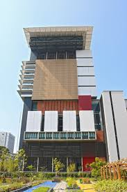

CONVENTION VENUE

Chamchuri10 Building
All parts of the scientific program will be hosted at the Chaloem Rajakumari 60 Building (AKA Chamchuri 10; www.prm.chula.ac.th) located in CU main campus.
Chamchuri 10 building is primarily used for international studies and graduate school, but has been routinely used for numerous conferences held by CU.
The conference room with a maximum capacity of holding 200 guests will be used for both oral and poster presentations.